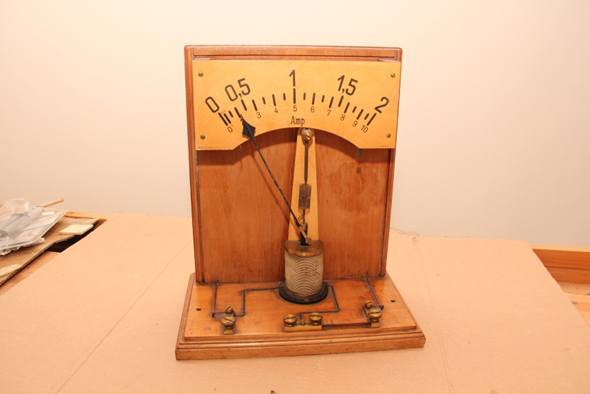

Amperometro
Scuola di provenienza: Liceo Classico P.Colletta, Avellino
Settore: Elettrologia
Costruttori: Sconosciuto
Materiali: Legno, fili di rane ricoperti da materiale isolante, ottone
Accessori: Lancetta,molla, scala graduata, resistenza di rame
Stato di conservazione: Discreto a parte la ruggine e la polvere
Descrizione: L´amperometro è uno strumento utilizzato per la misurazione dell´intensità della corrente elettrica. Sfruttando le forze elettromagnetiche generate dal passaggio di corrente elettrica in una bobina rigida. Quest´ultima è racchiusa tra i poli di un magnete e quindi immersa in un campo magnetico. Alla bobina è collegato l´indice, la cui deviazione è proporzionale al valore della corrente.